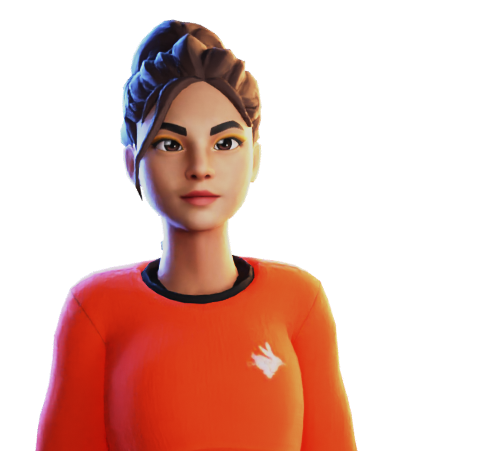

Hallo Lina! Heute schauen wir uns an, was mit der Normalparabel passiert, wenn wir die Gleichung verändern.
Ich verstehe nicht, was das +2 bei g(x) = x² + 2 macht.
Gute Frage! Ich habe dir beide Graphen in die Mitschrift gezeichnet. Vergleich mal die Scheitelpunkte von f und g – was fällt dir auf?
Der blaue liegt genau zwei höher?
Genau! Jeder Punkt wandert um 2 nach oben. Probier jetzt Aufgabe b) selbst – ich schaue dir über die Schulter.

Bisher kennst du lineare Funktionen wie f(x) = 2x + 1, deren Graphen gerade Linien sind. Wenn wir das x quadrieren, erhalten wir eine Parabel.
a) Erstelle eine Wertetabelle für f(x) = x² mit den x-Werten −2, −1, 0, 1, 2.
b) Wie verändert der Term +2 die Lage des Graphen im Vergleich zur roten Normalparabel?